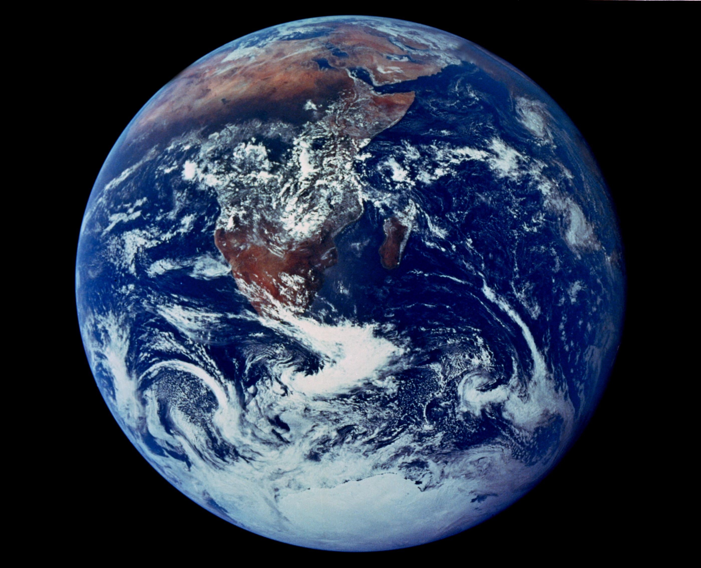

Michael Joseph Jackson
Michael Joseph Jackson (29 de agosto de 1958, Gary, Indiana - 25 de junio de 2009, Los Ángeles, California), conocido simplemente como Michael Jackson, fue un cantante, compositor y bailarín estadounidense de música hard rock, rhythm & blues (soul y funk), disco y dance. Tras formar en los años sesenta, siendo aún un niño, un grupo de gran éxito en compañía de sus hermanos, The Jackson Five, en la década de los años ochenta se convierte en la superestrella de rock más exitosa a nivel mundial, el nuevo rey de la música rock, debido al extraordinario impacto de su álbum Thriller (1982), el disco más vendido de la historia de la música.

La tierra
La Tierra se formó hace aproximadamente 4550 millones de años y la vida surgió unos mil millones de años después. Es el hogar de millones de especies, incluyendo los seres humanos y actualmente el único cuerpo astronómico donde se conoce la existencia de vida. La atmósfera y otras condiciones abióticas han sido alteradas significativamente por la biosfera del planeta, favoreciendo la proliferación de organismos aerobios, así como la formación de una capa de ozono que junto con el campo magnético terrestre bloquean la radiación solar dañina, permitiendo así la vida en la Tierra. Las propiedades físicas de la Tierra, la historia geológica y su órbita han permitido que la vida siga existiendo. Se estima que el planeta seguirá siendo capaz de sustentar vida durante otros 500 millones de años.La superficie terrestre o corteza está dividida en varias placas tectónicas que se deslizan sobre el magma durante periodos de varios millones de años.